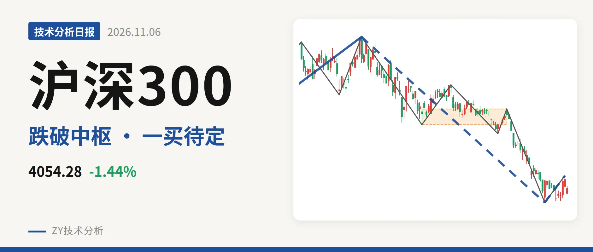
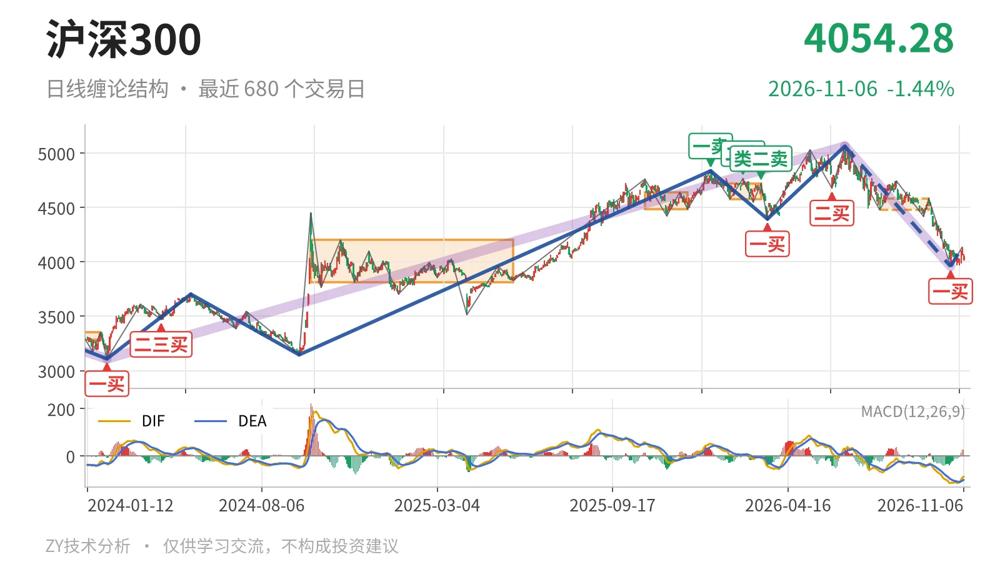
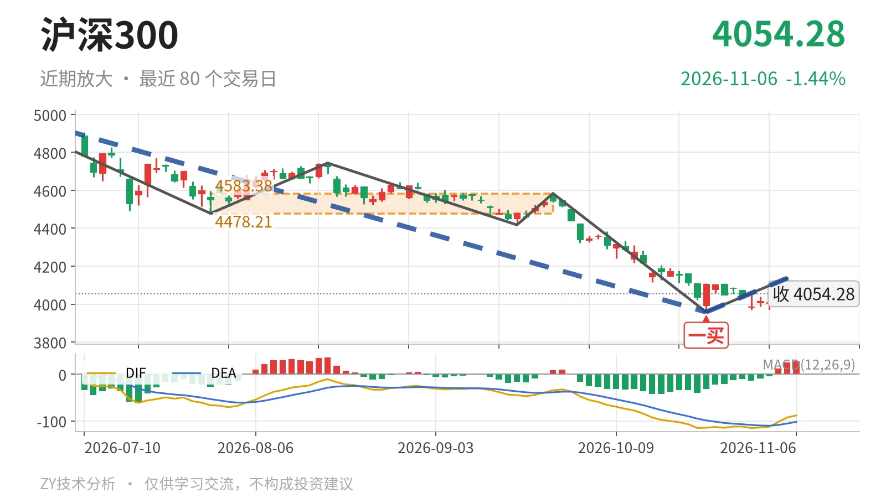

沪深300｜反抽未回4478点中枢

最近日线中枢 4478.21—4583.38点，收盘位于中枢之下
一句话：反抽未回中枢下沿，日线结构偏弱，一买暂未破坏
🧭 走势结构：更大级别仍在上涨延续，日线下跌没结束
更大级别仍处于2024年2月2日至2026年6月23日上涨段的延续中，从3108.35点涨至5064.27点，上涨约63%。但6月23日以来的下跌段还未结束。日线线段里，6月23日至10月23日下跌线段跌21.8%，内含5笔；10月23日至11月5日反弹只有一笔，不构成线段。因此当前只能看作日线下跌段中的一次反弹，不能当线段反转。

📍 中枢与位置：最新价低于最近中枢下沿，中枢下移
最新收盘4054.28点位于最近日线中枢7月30日至9月22日的4478.21—4583.38点下方，距下沿约424点。先前两处日线中枢分别在4484.27—4640.63点和4578.21—4720.86点，当前中枢已下移。本次反弹高点4136.80点也未能回到4478点，价格继续受下沿压制。
🅱 买卖点：10月23日一买暂为笔级别，反弹未回中枢
最近的日线笔级别买点是10月23日一买3958.14点，所在下跌笔9月22日至10月23日已经结束。后续反弹笔高点4136.80点，距中枢下沿4478.21点约341点，仍未回到中枢。因此这个一买只能先看日线笔级别，不能直接当作线段反转。前低未破，该买点暂未破坏；若跌破3958点，一买只对应更小级别。

📉 背驰：最后一跌面积收缩，但DIF未抬高
比较6月23日至7月30日与9月22日至10月23日两段日线下跌笔，前者绿柱面积650、DIF低点-66.5，后者绿柱面积494、DIF低点-115.1。新低3958.14点出现后，绿柱面积收缩，但DIF低点走得更低，这不是标准背驰。日线级别没有给出充分背驰信号，10月23日一买更依赖小级别力度，而非日线背驰确认。
🔎 关键位置观察：反抽看4478点，破位看3958点
后续日线结构偏弱，弱在价格压在4478点中枢下沿之下且未回到中枢。上方4478点若反抽回不到上方，回抽不进中枢，结构上构成三卖；重新站上4478点，下跌更可能是中枢扩展。下方3958.14点若被跌破，10月23日一买失效，6月23日以来的下跌线段继续。最新收盘4054.28点仍在两个位置之间，日线结构偏弱，但未破前低。
⚠️ 本文为基于公开行情数据的缠论技术结构记录，由程序自动计算并生成，仅供学习交流，不构成任何投资建议。市场有风险，投资需谨慎。